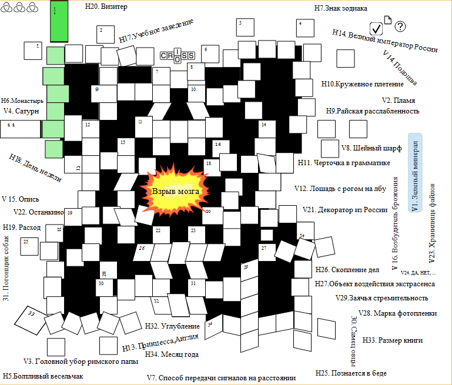
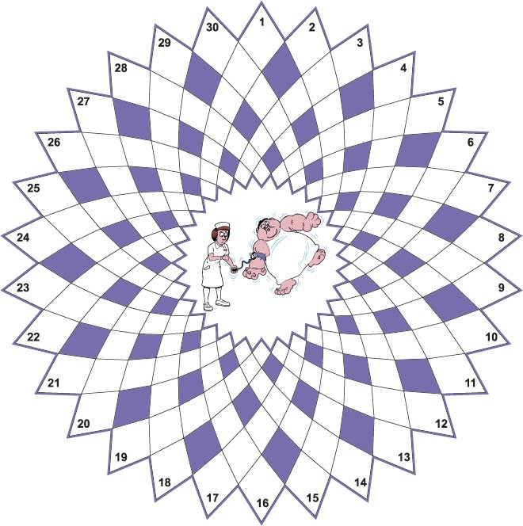
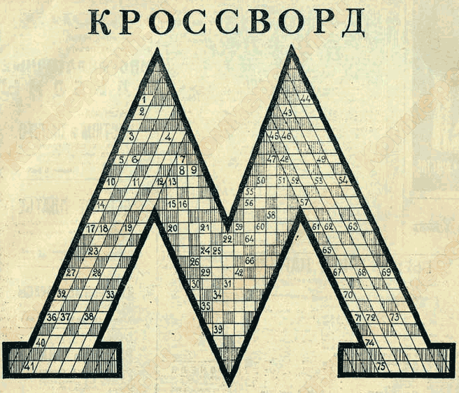
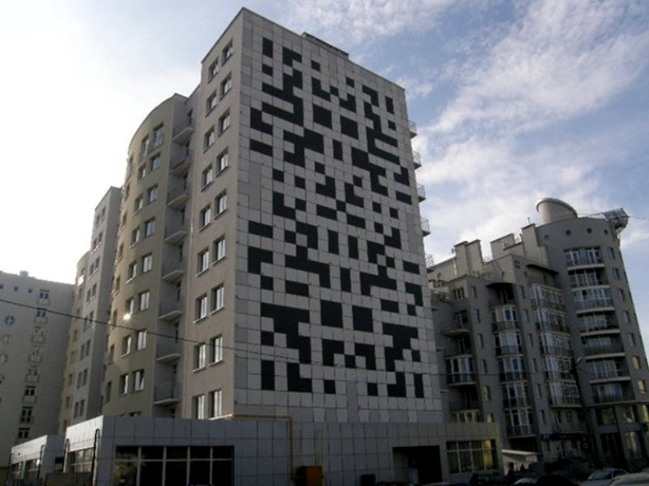

Игры без компьютера
Необычные кроссворды
 Неразгадываемый кроссворд
В 1998 году художник Антон Ольшванг развешивал свои необычные кроссворды на автобусных остановках Самары. Пассажиры приходили в БЕШЕНСТВО, пытаясь ответить на вопросы. А вы попробуйте отгадать такое: "пыль в недоступных местах" или "следы от чернил в кармане".
Круговой кроссворд
Круговой кроссворд - это разновидность классического кроссворда с сеткой необычной формы. Сетки различаются длиной слов, их количеством. Довольно оригинальный вид кроссворда, стоящий внимания.
Кроссворд из 1936 года
Данный кроссворд был представлен ввиде эмблемы метро 1936 года.В незаштрихованных клетках проставлены буквы так, чтобы, начиная с занумерованной клетки и заканчивая заштрихованным полем или краем фигуры, читались слова следующих значений.
Дом-кроссворд во Львове
Во Львове есть необычная многоэтажка. Боковую стену дома украсил огромный кроссворд 30 метров в высоту и 18 метров в ширину. Слова-разгадки, вписанные в квадратики специальной невидимой днем краской, будут высвечиваться по вечерам. В кроссворде зашифрованы имена выдающихся деятелей живописи и архитектуры. Львовянам раздадут буклеты с вопросами, и они смогут попробовать сами разгадать необычный кроссворд, а после захода солнца сверить ответы.